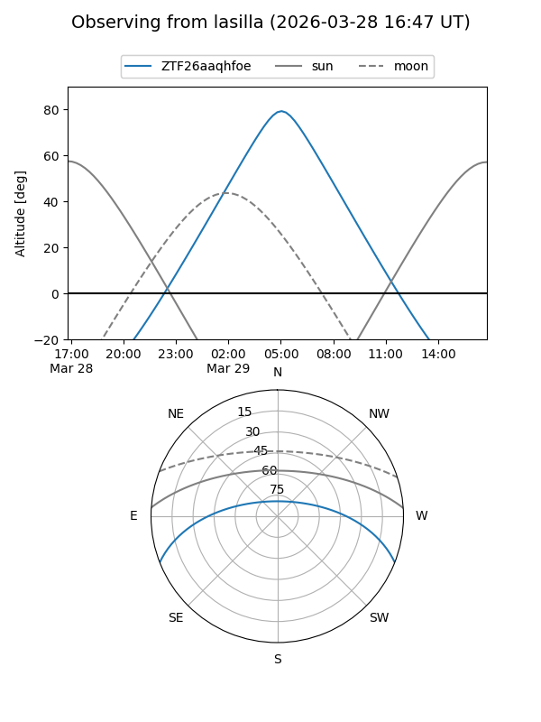
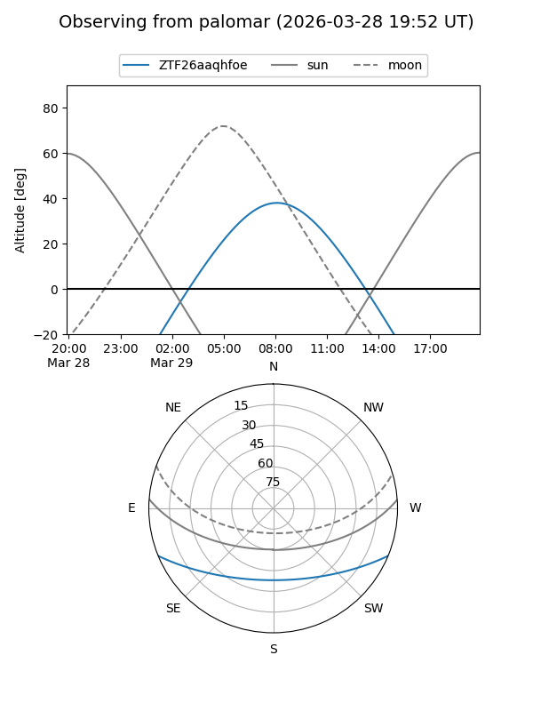

ZTF26aaqhfoe
Target ZTF26aaqhfoe at 2026-03-29 09:16
Aliases and brokers:
FINK: link
Lasair: link
ALeRCE: link
alt names
ZTF26aaqhfoe (ztf,fink_ztf)
Coordinates:
equatorial (ra, dec) = 191.0205,-18.45064
equatorial (HMS+DMS) = 12:44:04.92,-18:27:02.32
galactic (l, b) = (300.4906,+44.38623)
Flags:
Photometry:
last ztfg=16.64
1 ztfg detections
Lightcurve
Visibility


Additional plots